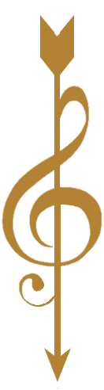
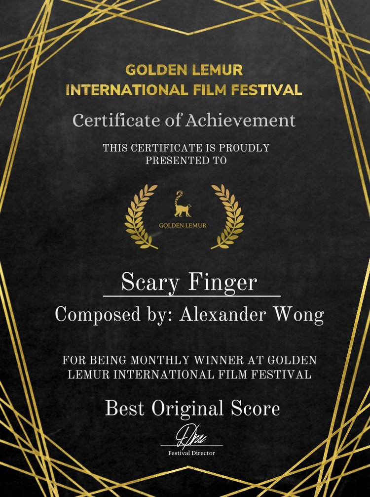
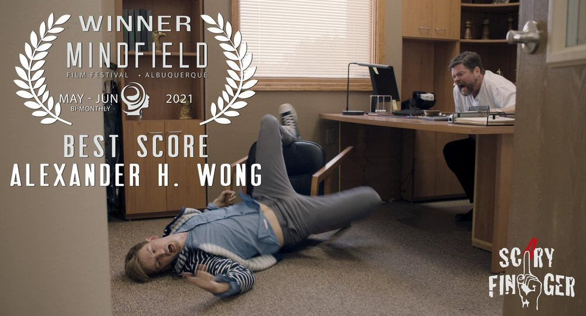
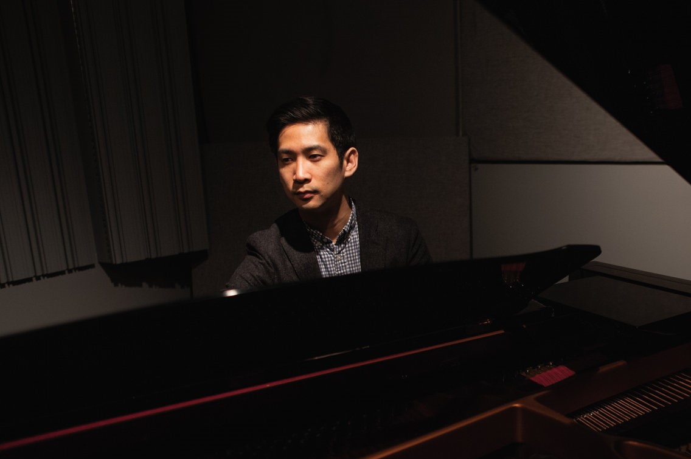

- 作曲家
- 電影
- 電視
- 多媒體

最新消息
- 
- 又得獎了！我很榮幸藉著電影【Scary Finger】獲得黃金狐猴國際電影節的《最佳原創配樂》。這部電影在電影節風靡前球！如果你能在附近的音樂節上看到它的演奏，一定要去看看！
- 我有幸為 Netflix 進行最新的創作，《預支未來》在第 56 屆年度金鐘獎中獲得三項入圍！包括：最佳電視迷你劇、迷你劇最佳新人和最佳燈光。很榮幸能參與這個節目，並與如此出色的團隊一起工作。恭喜所有參與讓這個節目栩栩如生的人，你們的辛勤工作和奉獻得到了回報！
- 
- 我很榮幸在明菲爾德電影節上獲得《最佳原創配樂》！我們的電影【Scary Finger】還獲得了《最佳導演》、《最佳男演員》和《最佳新墨西哥州短片》！感謝 Colin A. Borden 和整個團隊讓這部電影真正變得特別和令人驚嘆，我為它寫樂譜非常有趣！為每個人和我們所做的工作感到驕傲！
-
- 我為《預支未來》寫的片尾曲剛剛作為單曲發行，在這裡查看！也可於各大音樂串流媒體播放。
-
-
在這裡查看《預支未來》的預告片！
- 我拍的最新電視劇是科幻和警探劇的精彩融合！《預支未來》現已可在全球 Netflix 上瀏覽。
- 很高興與大家分享，我們的節目《魂囚西門》剛剛入圍2019年金鐘獎的三大獎項！包括《最佳迷你劇》、《迷你劇最佳女主角》（謝盈萱的精彩表演）和《聲音設計獎》（包括音樂和音效設計）。非常榮幸和感謝能與如此出色的團隊合作，將演出的音樂帶入生活！
-
- 看看這個幕後花絮，看看我們是如何為《魂囚西門》創作配樂的！
-
- 《魂囚西門》電視原聲帶現已上架各大音樂平台！實體專輯 CD 僅在台灣提供。
- 黃偉恆 最近剛剛完成了一部新的 Netflix 迷你劇《魂囚西門》的配樂！該節目現已可在全球 Netflix 上播放。不要錯過！
-
-
在此處查看《魂囚西門》的官方預告片！
-
-
片尾主題曲《Haunting Me》官方MV
關於我
- 
-
黃偉恆 積極為電影、電視和多媒體作曲，項目遍及舊金山、洛杉磯、紐約、台北、北京和上海。他的音樂出現在短片（動畫和真人秀）、廣告（產品和服務）、促銷營銷影片和各種網路內容中。他還為合唱團和現場管弦樂隊創作了幾部作品，他的音樂也曾在音樂會上演出。
黃偉恆 撰寫了台灣戲劇系列的樂譜：《魂囚西門》，由著名的台灣歌手 蕭敬騰 主演。 蕭敬騰 還演唱了黃偉恆 為該系列的片尾曲。由黃偉恆 擔任首席作曲家和音樂總監，於 2019 年在台灣電視台播出，並在全球 190 多個國家/地區的 Netflix 上播出。黃偉恆 在《魂囚西門》中的作品也獲得了2019年金鐘獎《聲音設計獎》的提名，台灣相當於艾美獎獎。《聲音設計獎》包括音樂和演出的聲音設計。《魂囚西門》還獲得了金鐘獎《最佳迷你劇》和《迷你劇最佳女主角》的提名。黃偉恆 還為短片《霰彈槍》配樂，該短片在電影節巡迴演出中獲得了廣泛好評。它在雙子層國際電影節上獲得《最佳喜劇短片》和《最佳短片女演員》提名，並在新墨西哥州馬德里電影節上獲得《最佳製作》。2020年，黃偉恆 為Netflix台灣科幻/警察局電視劇（Netflix Taiflix Sci-Fi/Police Drama）組成了分數：《 預支未來》，在那裡他再次擔任首席作曲家和音樂主管。黃偉恆 還創作了 End Credits 歌曲，其中包括獲獎歌手 9m88 和美國搖滾樂隊 Hoobastank 的貝斯手 Jesse Charland。《預支未來》被提名為 2021 年金鐘獎的《最佳電視迷你劇》、《迷你劇最佳新人》和《最佳燈光》。黃偉恆 還為短片《Scary Finger》組成了樂譜，他在北美的Mindfield電影節和歐洲的Golden Lemur International Film Festival贏得了《最佳原創樂譜》。
黃偉恆 在加州大學洛杉磯分校（UCLA）的朱莉亞德音樂學院（Juilliard Music School）學習了音樂理論，並擁有紐約大學音樂技術碩士學位，取得電影和多媒體的專業知識。他在台灣著名的世新大學教授音樂和音頻製作、聲音設計和電影配樂，同時還管理著他們的校內錄音室。黃偉恆 目前是國立臺北藝術大學的教職員工。他還在該大學開發一個全新的課程，該課程將包含音樂和動態影像的專業製作。此外，黃偉恆 在他的個人音樂工作室教私人課程。有時，黃偉恆 會舉辦有關電影音樂主題的研討會，並為懷抱理想的學生進行音樂創作。